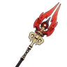

UID検索結果：詳細モーダルモック
UID DETAIL
リンネア Lv.90 / C2
リンネア
岩元素 / 弓 / Lv.90 / 命ノ星座 C2
通常攻撃「星の導き」 Lv.1
弓による最大5段の連続攻撃を行う。長押しでより強力な狙い撃ちを行う。
元素スキル「月の鍵」 Lv.10
月の力を呼び起こし、敵に岩元素ダメージを与える。命中時、月結晶反応に関する効果を発動する。
元素爆発「月影」 Lv.8
月影を放ち、周囲の敵に岩元素ダメージを与える。
固有天賦
固有天賦1「月影の祝福」元素スキル発動後、効果を発動する。
固有天賦2「月光の導き」元素反応が発生した時、効果を発動する。
命ノ星座
C1「星の始まり」命ノ星座第1重の効果説明。
C2「星の連なり」命ノ星座第2重の効果説明。
C3〜C6各命ノ星座の効果説明。

霜翠の金枝
Lv.90 / 精錬ランク R1
武器効果
元素スキルまたは月結晶攻撃が敵に命中した後、装備者の岩元素ダメージと月結晶反応ダメージ+40%。
暁の星と月の歌
4セット
セット効果
2セット：元素ダメージ+15%。
4セット：月結晶反応を起こした後、該当元素のダメージを強化する。
ステータス
HP17,431
攻撃力996
防御力2,846
元素熟知134
会心率90.29%
会心ダメージ222.11%
元素チャージ効率100.00%
炎元素ダメージ0.00%
水元素ダメージ0.00%
風元素ダメージ0.00%
雷元素ダメージ0.00%
草元素ダメージ0.00%
氷元素ダメージ0.00%
岩元素ダメージ0.00%
物理ダメージ0.00%